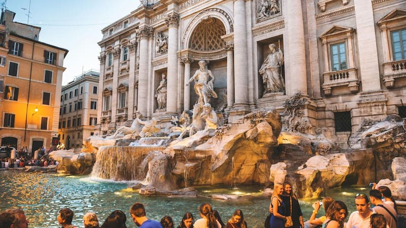

Rome, Italy is a city full of history and charm. Walking through its streets feels like stepping back in time, with ancient ruins and famous landmarks like the Colosseum and the Pantheon around every corner. The Vatican City is also right in the heart of Rome, attracting visitors from all over the world who want to see St. Peter’s Basilica and the Sistine Chapel.
